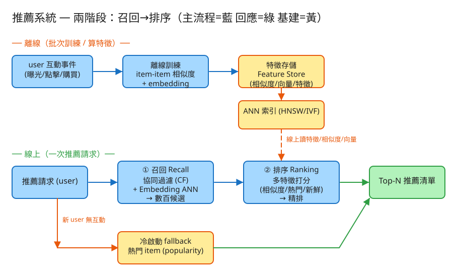

㊸ 推薦系統 · 初學者友善版
🅴 AI/LLM
看故事就懂
輕鬆讀 25 分鐘
🧠 這份怎麼讀？
這份用「大腦比較好吸收」的方式重寫：先講生活比喻 → 把系統拆成小關卡 → 邊讀邊考自己。
分成兩部分：Part 1 概念（這系統在幹嘛）、Part 2 工程細節（怎麼真的蓋出來，一樣白話）。
遇到 💭 停一下 就先自己想 3 秒再往下看——這叫「提取練習」，比一直往下滑記得更牢。
1. 60 秒搞懂它在幹嘛
想像你走進一間有 200 萬本書的超級大書店。你什麼都沒說，店員卻能在幾秒內，
端來一疊「你大概會喜歡」的書放在你面前。這就是推薦系統在做的事——
購物網站的「猜你喜歡」、YouTube 的下一支影片、首頁那條永遠滑不完的信息流，背後都是它。
它的難，不難在「會不會挑書」，而難在規模 + 速度：商品有幾百萬個、用戶有幾千萬人，
而你只有不到 0.1 秒可以反應（慢一點你就滑走了）。不可能每次都把 200 萬個商品全部評一輪。
🔑 一句話
推薦系統 = 會看人端菜的書店店員：先粗略抓一疊你可能愛的（召回），
再從這疊裡精挑出最好的幾本端給你（排序）。先海選、再決賽，兩階段。
2. 為什麼不能「整間店掃一遍」？
很多人第一個念頭是：「不就把每個商品都打個分數，分數高的排前面就好？」聽起來合理，但你想想——
🛒 比喻：選舉跟超商集點
要選出「全國最受歡迎的人」，你不會叫 2300 萬人每個都互相打分（算到天荒地老）。
你會先初選圈出幾百個有人氣的，再讓他們決選細比。
一次只認真比「一小撮」，而不是「全部」。
推薦系統一模一樣。200 萬個商品，每個都用複雜模型仔細打分，幾秒鐘根本算不完，使用者早就關掉 App 了。
所以聰明的做法是分兩階段：
① 先用很便宜、很快的方法，把 200 萬粗砍成幾百個候選（這叫召回）。
② 再用很貴、很準的方法，只對這幾百個仔細打分排名（這叫排序）。
關鍵洞察：「貴」的工只做在「少數」身上。把 200 萬瞬間縮到幾百，貴的排序才付得起這個錢。
💭 停一下：為什麼不乾脆「只用便宜的召回」就好，省掉排序這步？
看答案
因為召回為了快，用的是很粗的方法，只能保證「大致相關」，分不出這幾百個裡面誰最好。排序才會考慮「現在幾點、你用手機還是電腦、這商品最近紅不紅」等細節，把最該擺第一的挑出來。召回管廣度（別漏掉好東西），排序管精度（把最好的擺最前）。
3. 把系統拆成 3 個關卡
別被「系統」嚇到。整件事其實就是闖 3 關，一關一關來：
1召回：先抓一籃「可能喜歡的」
目標：從幾百萬商品裡，快速撈出幾百個候選。怎麼撈？常用兩條路，可以同時跑：
👥 路 A：協同過濾「跟你像的人也買了什麼」
你買了登山鞋。系統發現「買登山鞋的人，常常也買登山杖、排汗衣」。
於是把登山杖、排汗衣丟進你的籃子。就像朋友推薦：「你跟阿明口味好像，他超愛這個，你應該也會喜歡」。
🧭 路 B：embedding 找「氣味相近」的商品
系統會幫每個商品標上一組「氣味座標」（這叫 embedding）——
讓意思相近的東西，座標也靠在一起（科幻小說 ↔ 科幻電影、瑜珈墊 ↔ 瑜珈服）。
於是「找你可能喜歡的」就變成「在地圖上找離你口味最近的幾個商品」，超快。
👉 這兩路互補：協同過濾靠「大家一起買」的紀錄，遇到剛上架、還沒人買過的新商品就沒輒；
embedding 靠「內容像不像」，新商品只要氣味對也撈得到。所以兩條一起跑，再把結果合併去重。
2排序：從這一籃精挑出 Top-N
籃子裡現在有幾百個候選了。這關要仔細比較，排出最該給你看的前 20 個。
🍽️ 比喻：店員端菜前再瞄你一眼
店員抓了一疊書後，端給你之前還會想：「現在是早上（你可能想看輕鬆的）、你上週買過這系列、這本最近超紅」……
綜合一堆線索，才決定哪本擺最上面。排序就是在做這個「綜合考量、排名」。
排序會看很多特徵（線索）：召回時的分數、商品多紅、夠不夠新、跟你過去口味合不合、現在幾點、你用什麼裝置……
全部餵進一個模型，算出「你會點它的機率」，由高到低排，取前 N 個。
3回饋：你一點，它就變更聰明
你點了、買了、看了多久，這些動作會偷偷回流成新資料，讓系統越來越懂你。這叫回饋迴路。
🔁 比喻：常去的店記住你的習慣
你常去的咖啡店，因為你每次都點燕麥拿鐵，店員漸漸記住了，下次你一進門就問「一樣燕麥拿鐵？」。
系統也是：你每次的點擊就是線索，慢慢累積成「它對你的理解」。
⚠️ 但這裡有個陷阱：系統只看得到「它推給你、你才有機會點」的東西。
久了會越推越像、越來越窄（你只看到同一類，可能喜歡的新類別永遠出不來）。這個坑後面會再講怎麼補。
✅ 三關一句話
① 召回粗抓一籃（跟你像的人買了啥 + 氣味相近的商品）→ ② 排序精挑出 Top-N → ③ 你的點擊回饋讓它更懂你。就這樣。
4. 第一次來的客人怎麼辦？（冷啟動）
上面整套都建立在「系統認識你」之上。但如果是剛註冊、什麼都沒點過的新用戶呢？
系統對你一無所知，「跟你像的人」「你的口味座標」全都是空白——這叫冷啟動。
🆕 比喻：店員面對第一次上門的客人
完全不認識你，店員會怎麼辦？先端店裡最暢銷的幾本給你看（總不會錯到哪去），
同時觀察你拿起哪本，馬上開始建立對你的印象。
系統做法一樣：新用戶先推「熱門 / 大家都愛」當保底（fallback），
等你一有動作，立刻拿來啟動個人化。新商品也有同樣問題（沒人買過，協同過濾撈不到），
靠 embedding 的「內容氣味」先讓它有機會被看到，再慢慢累積數據。
💭 停一下：為什麼新用戶「推熱門」是個不錯的保底，而不是隨機亂推？
看答案
因為熱門代表「大多數人都接受」，對一個你還不了解的人來說，這是命中率最高的猜測——總比亂槍打鳥好。等他點了第一下，你就有線索了，可以馬上切回個人化。隨機亂推容易踩雷，第一印象差人就跑了。
5. 設計時最怕的 3 件事
工程上的「取捨」聽起來很抽象。換個方式記：這個系統最怕三件事，每個設計都是為了避開某個「怕」。
😱 怕「召回漏了好東西」
召回是第一關，召回沒撈到的，排序再強也救不回來（決賽名單裡根本沒這個人，怎麼比都選不上）。
所以召回寧可多開幾條路、撈寬一點。但太寬又會塞給排序一堆垃圾、拖慢速度——要拿捏。寧可多撈，但別撈成垃圾山。
😱 怕「太慢」
使用者沒耐心，慢個半秒就滑走了。所以「貴的計算」一律離線先算好（商品的氣味座標、相似商品表，半夜慢慢算），
線上只做查表這種秒回的動作。把重活搬到沒人等的時候做。
😱 怕「越推越窄（回聲室）」
一味迎合你過去的點擊，會把你關進「同溫層」——永遠只看到同一類，無聊又流失。
所以要故意留一點名額去「探索」新東西（叫 exploration），打散一下，讓你偶爾遇到驚喜。別只討好，要偶爾驚喜。
6. 一張圖看懂

✏️ 用 Excalidraw 開啟編輯（diagram.excalidraw）
白話導讀，分「半夜先做功課」和「你一打開 App 的瞬間」兩部分看：
- 🌙 離線（半夜慢慢算）：把大家的點擊紀錄拿來，算出「哪些商品常被同一批人買」的相似表、
幫每個商品標好「氣味座標」，存進倉庫備用。
- ⚡ 線上（你一打開的瞬間）：
- ① 召回：查相似表（跟你買過的像的）＋查氣味地圖（離你口味近的）→ 撈出幾百個候選。
- （如果你是新用戶 → 走 熱門保底那條路）
- ② 排序：對這幾百個用一堆線索仔細打分 → 排出 Top-N。
- 📱 結果端到你眼前 → 你一點，動作又回流成新資料，餵養下一輪。
7. 名詞白話翻譯
看完上面，這些詞你其實都已經懂了，這裡只是把「工程術語 ↔ 白話」對起來，Part 2 會用到：
| 工程術語 | 白話解釋 |
|---|
| 召回 (Recall / 候選生成) | 海選：從幾百萬粗抓一籃「可能喜歡的」幾百個 |
| 排序 (Ranking / 精排) | 決賽：對那一籃仔細打分，排出最好的 Top-N |
| 協同過濾 | 「跟你口味像的人也買了什麼」「跟你買過的像的東西」 |
| embedding（向量） | 商品的「氣味座標」：意思相近的東西座標就靠在一起 |
| ANN（近似最近鄰） | 在氣味地圖上「快速找最近的幾個」的找法，不用全部量一遍 |
| 冷啟動 | 對新用戶/新商品一無所知時的處理（先推熱門保底） |
| 特徵 (feature) | 排序時參考的「線索」：多紅、多新、合不合你口味、現在幾點… |
| 回饋迴路 | 你的點擊回流成新資料，讓系統越來越懂你 |
| exploration（探索） | 故意留名額推點新東西，避免越推越窄 |
| 離線 / 線上 | 離線=半夜慢慢算的重活；線上=你打開時的秒回查表 |
| QPS | 每秒幾筆請求（衡量「多忙」的單位） |
| API | 系統之間講好的「點餐單」格式：你給我什麼、我回你什麼 |
🛠️ Part 2 ｜ 工程細節（一樣白話）
概念懂了，來看「真的要動手蓋，得想清楚哪些事」。一樣用比喻，不用怕。
8. 要準備多大？（規模估算）
🍱 比喻：辦活動前先估人數
辦活動前，你會先估「大概來幾個人」，才決定訂幾個便當、租多大場地。
系統設計也一樣：先估數字，才知道要準備多大的「料」。這一步叫規模估算。
我們估幾個關鍵數字（數字不必背，重點是感受它的「形狀」）：
| 估什麼 | 大概數字 | 所以呢？ |
|---|
| 商品 / 用戶規模 | 200 萬商品、5000 萬用戶 | 「誰買過誰」的大表超級空（<0.1% 有填），不能硬掃全庫 |
| 有多少人在刷 | 每人每天刷 10 次 → 5 億次/天 | 平均每秒 6 千次、尖峰 3 萬次，讀的壓力很大 |
| 召回後剩幾個 | 從 200 萬縮到 ~500 個 | 砍掉約 4000 倍！貴的排序只付這 500 個的錢 |
| 能用多少時間 | 整趟 < 100 毫秒（眨一下眼） | 召回約 20ms＋排序約 30ms，剩的當緩衝 |
🎯 關鍵洞察：把貴的工留給少數
瓶頸就是一句話：「商品太多 ÷ 時間太少」。200 萬個不可能在 0.1 秒內逐一細算。
解法永遠是：召回先把候選砍到幾百（用很快的查表、找最近鄰），排序只對這幾百個花大錢。
💭 停一下：為什麼「把重活放到離線（半夜）做」能讓線上變快？
看答案
因為訓練模型、算每個商品的氣味座標、算相似商品表，這些都是又慢又吃資源的事。半夜沒人等的時候慢慢算好、存起來，線上要用時直接查現成的就好——查表是毫秒級。把「算」和「用」分開，用的時候自然快。這叫「離線算、線上查」。9. 系統之間怎麼溝通？（API）
🍔 比喻：點餐單
API 就是兩個系統之間講好的「點餐單格式」：你要點什麼（給我哪些欄位）、我回你什麼。
講好格式，雙方就能合作，不用知道對方廚房怎麼運作。
這題只要記住三張「點餐單」：
① 要推薦（最高頻，使用者一刷就呼叫）
GET /recommend?user=u_123&n=20&scene=home
我回：[ {商品:"i_55", 分數:0.83, 理由:"跟你買過的耳機相似"}, ... ]
回傳會附上理由（讓推薦看起來不像亂猜，叫「可解釋性」）和「是不是冷啟動」的標記。這是被呼叫最兇的一張單，所以要最快。
② 回報互動（你點了/買了，事件，非同步）
POST /interaction
給我：{ user:"u_123", 商品:"i_55", 動作:"click" } # 看/點/買…
關鍵：這張單走自己的通道，不擋推薦那條路。先收下你的點擊，後面慢慢拿去更新資料——就像餐廳收意見卡，不會因為你寫意見就讓後面的人沒法點餐。
③ 找相似商品（商品詳情頁的「相關商品」）
GET /items/{id}/similar?n=10
這張直接查離線算好的「相似表」就能回，不用跑完整兩階段。
10. 系統要記住哪些事？（資料模型）
📒 比喻：四本筆記本
系統要把資料記在「筆記本」（資料表）裡。重點是「天天在寫的」和「偶爾算一次的」要分開放，原因下面講：
📝互動簿（誰對誰做了什麼）
每個動作一列：user、商品、動作(看/點/買)、時間。這本一直在加新行、量超大，
只加不改（append-only）。它是所有學習的原料。
🔗相似商品簿（離線算好）
來源商品 → 相似商品 → 相似度分數。每個商品只存「最像的前幾名鄰居」。
召回路 A（協同過濾）直接查這本，秒回。
🧭氣味座標簿（embedding，離線算好）
商品 → 一串座標數字（例如 64 個）。召回路 B 在這本上「找最近鄰」。
200 萬個座標其實才約 0.5 GB，小到可以整本塞進記憶體，找起來飛快。
🏷️特徵簿（排序要用的線索）
分兩種：每個 user 的(近期偏好、活躍度…)、每個商品的(多紅、多新、類別、點擊率…)。
排序時快速查出這些線索來打分。
為什麼要分這麼多本？
因為它們的「個性」完全不同：互動簿是狂寫的流水帳、相似簿和座標簿是半夜算一次的成品、特徵簿是線上狂查的小抄。
分開放，才能各自用最適合的方式存、各自擴展。記住那句核心：線上只查不算，算的全留給離線。
11. 哪裡會塞車、怎麼拓寬？（擴展）
🚗 比喻：找出塞車路段，拓寬它
系統變大時，總有某個環節會先「塞車」。工程師的工作就是找出最會塞的地方，把它拓寬。一個一個看：
| 哪裡會塞車 | 怎麼拓寬 |
|---|
| 召回：200 萬商品沒法即時逐一算 | 用「氣味地圖找最近鄰」＋查相似表，把「全部掃一遍」的笨功砍掉 |
| 排序：要查一大堆 user/商品的線索 | 把特徵簿放記憶體、一次批次撈、用不到的線索砍掉 |
| 剛點的東西沒馬上反映到推薦 | 大盤半夜批次算，近期口味用即時串流補上去（兩者合用） |
| 商品一直新增，氣味地圖要重建很貴 | 支援「邊加邊用」的索引，平時增量補、定期再整個重建 |
| 每次都要對幾百個候選打分，算力吃緊 | 限制候選數上限、把模型瘦身、用 GPU 一次批次算多個 |
12. 還有哪些「魚與熊掌」？（取捨）
「Part 1 的三個怕」是核心取捨。這裡補幾個常被面試官追問的：
⚖️ 召回撈寬 vs 撈窄
撈太寬 → 排序負擔大、混進雜訊；撈太窄 → 好東西根本進不了決賽。
實務做法：開多條召回路、各取一些，再控制總候選數。
⚖️ 即時 vs 批次
批次（半夜重算）穩、省力，但「剛點的」要等下次才反映；即時（串流更新）新鮮，但工程複雜。
常見折衷：離線算大盤 + 即時補近期。
⚖️ 準 vs 快
更大的排序模型、更多線索 → 更準，但更慢更吃算力。
召回用「近似」（找差不多近的，不保證絕對最近）換速度——在 0.1 秒預算內找平衡。
💭 追問：「召回根本沒撈到那個好商品」怎麼救？
救不了——排序只能在召回給的籃子裡挑。所以對策在召回端：多開幾條路（協同過濾 + 內容/氣味召回兜底），讓好東西更不容易被漏掉。這也是為什麼「召回求廣度」這麼重要。💭 追問：怎麼知道推得好不好？
線上看真實指標：點擊率、轉換率、停留時長，並做 A/B test（一半的人用新版、一半用舊版，比成績）。離線則用一些準確度指標先篩掉明顯爛的版本。13. 動手玩玩看
讀十遍不如玩一遍。這題有一個真的可以跑的小程式，讓你親眼看到「召回 → 排序」兩階段：
# 啟動（在這題的 demo 資料夾裡）
cd demo
php -S localhost:8043 -t public
# 然後瀏覽器打開 http://localhost:8043
- 點一個老用戶（例如 u1，3C 重度愛好者）→ 看它召回撈出哪些候選、再排序出 Top-N。
- 輸入一個沒互動過的新名字（例如
newbie）→ 看它退回推熱門（冷啟動）。
- 觀察每個推薦旁邊的「理由」和「召回分 vs 排序分」怎麼變。
玩的時候想一下
對 u1 看召回撈出來「一籃」，再看排序後「順序變了」——這就是兩階段在運作（海選 → 決賽）。
換成新名字看它推熱門，這就是冷啟動保底。
14. 考考自己
先不要看答案，自己用講給朋友聽的方式回答看看（講得出來才是真的懂）：
Q1：用「書店店員」比喻，解釋推薦系統為什麼要分兩階段？
200 萬本書沒法本本仔細評（太慢）。店員先粗抓一疊你可能愛的（召回），再從這疊精挑端給你（排序）。先海選、再決賽——貴的功只花在少數候選身上。Q2：召回的兩條路是什麼？各自的長處與短處？
路 A 協同過濾：「跟你像的人也買了什麼」，靠大家的購買紀錄，但新商品沒人買過就撈不到。路 B embedding：用商品的「氣味座標」找相近的，新商品只要氣味對也撈得到。兩路互補，一起跑再合併。Q3：新用戶什麼都沒點過，系統怎麼辦？為什麼這樣做？
冷啟動：先推熱門/大家都愛當保底（命中率最高的猜測），同時觀察他第一個動作，馬上開始個人化。比亂推安全。Q4：為什麼「召回沒撈到，排序再強也沒用」？
排序只能在召回給的籃子裡排名。好東西沒進籃子，等於決賽名單裡根本沒這個人，怎麼比都選不上。所以召回要求廣度、別漏，常開多路召回兜底。Q5（工程）：為什麼要把「貴的計算」放到離線（半夜）做？
訓練模型、算氣味座標、算相似表都又慢又吃資源。半夜沒人等時算好存起來，線上只要查現成的（毫秒級）。把「算」和「用」分開，用的時候才快——離線算、線上查。Q6（工程）：互動回報（你點了什麼）為什麼要走「獨立、非同步」的通道？
因為推薦讀取是最高頻、最該快的關鍵路徑，不能被「寫紀錄」這件事拖住。回報走自己的路先收下，後面再慢慢拿去更新特徵——寫不擋讀。Q7（工程）：為什麼資料要分成互動簿、相似簿、座標簿、特徵簿好幾本？
因為它們個性不同：互動是狂寫的流水帳、相似/座標是離線算一次的成品、特徵是線上狂查的小抄。分開放才能各用最合適的存法與擴展方式，並落實「線上只查不算」。15. 30 秒回顧
推薦系統 = 會看人端菜的書店店員：先海選（召回）、再決賽（排序）。
3 個關卡：① 召回粗抓一籃（跟你像的人買了啥 + 氣味相近的商品）→ ② 排序精挑 Top-N → ③ 你的點擊回饋讓它更懂你。新用戶先推熱門保底（冷啟動）。
3 個怕：怕召回漏了好東西（多路召回、求廣度）、怕太慢（離線算、線上查）、怕越推越窄（留名額探索）。
工程細節一句話：瓶頸是「商品太多 ÷ 時間太少」→ 召回砍 4000 倍、排序只算幾百個 → 用「點餐單(API)」溝通、寫不擋讀 → 四本筆記本（互動/相似/座標/特徵）分開放 → 把重活全搬到離線。
想看更精簡、面試速查用的版本？👉 前往完整版（同樣內容的工程速查格式）。